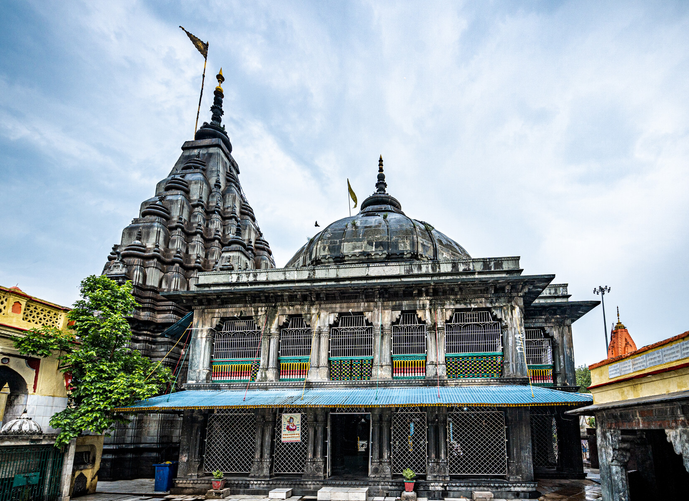
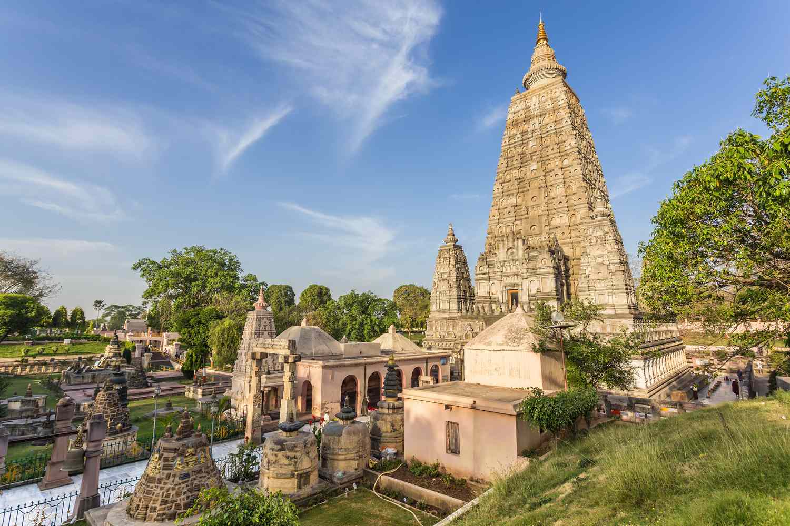
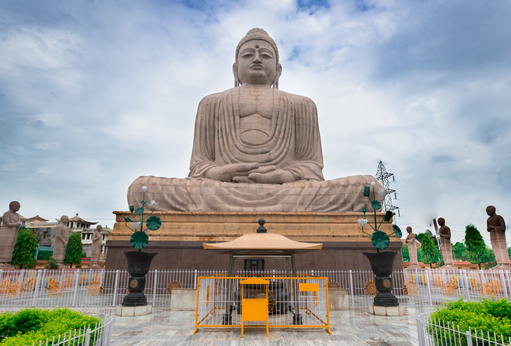

This is page containing information about some best places in Gaya
For Exploring Gaya kindly scroll
Vishnupad temple
The temple was erected during 1787 by Queen Ahilyabai. A beautiful sacred place on the banks of
Phalgu river surrounded by rugged rocks on three sides and water on the fourth side. The second
largest city of Bihar is that ancient city which has been talked about in Ramayana (where Lord Rama
went to Gaya to do pind-daan of his father Dashrath) and Mahabharata. It has also witnessed the
enlightenment of Gautama Buddha. Following this, Gaya is a home to the legendary Vishnupad Temple
which is dedicated to Lord Vishnu

Mahabodhi Temple
The Mahabodhi Temple (literally: "Great Awakening Temple"), a UNESCO World Heritage Site, is an
ancient, Buddhist temple in Bodh Gaya, marking the location where the Buddha is said to have
attained enlightenment.
The temple stands in the east to the Mahabodhi Tree. Its architectural effect is superb. Its
basement is 48 square feet and it rises in the form of a cylindrical pyramid till it reaches its
neck, which is cylindrical in shape. The total height of the temple is 170 ft. and on the top of the
temple are Chatras which symbolize sovereignty of religion.

Budhha Statue
The 80ft Buddha statue is one of the many stops in the Buddhist pilgrimage and tourist routes in Bodh Gaya, Bihar (India). The great statue is a mix of sandstone blocks and red granite. It is possibly the largest built in India and was consecrated on 18 November 1989 by the 14th Dalai Lama. The foundation stone for the statue was placed in 1982

Sita kund
Situated on the opposite side of Vishnupad temple in Gaya city of Bihar, Sita Kund is an invaluable heritage from a cultural point of view. Sita Kund is associated with the Ramayana period, and it is believed that Sita Mata donated the body of her father-in-law, Dashrath. Sita Kund is a small temple situated on the other bank of the river Falgu, just opposite the Vishnupad temple.